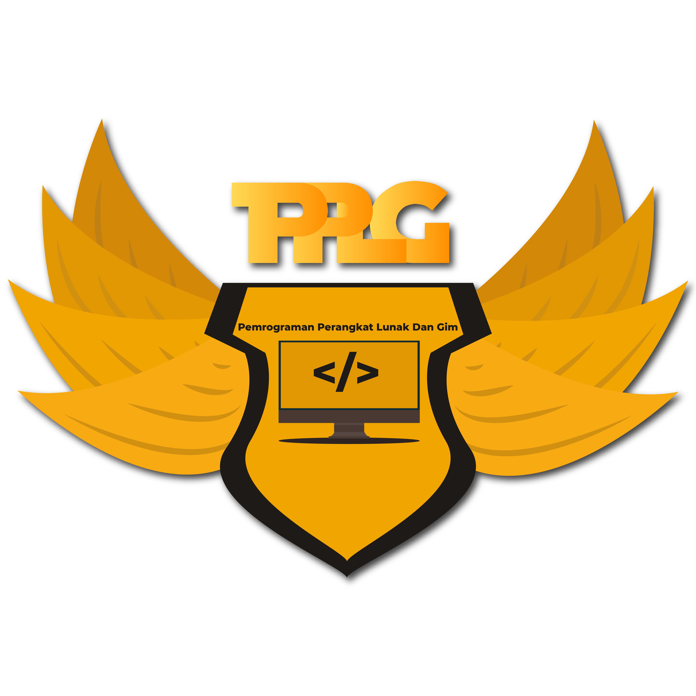

< Kembali ke index.html
Pengembangan Perangkat Lunak dan Gim

Tujuan jurusan Pengembangan Perangkat Lunak dan Gim adalah membekali peserta didik dengan keterampilan, pengetahuan dan sikap (hard skills dan soft skills), agar lulusannya kompeten dalam hal-hal berikut:
- Memahami proses bisnis di bidang industri pengembangan perangkat lunak dan gim
- Mampu mengembangkan wawasan tentang perkembangan teknologi dan isu-isu global bidang perangkat lunak dan gim
- Memahami profesi dan kewirausahan (job profile dan technopreneurship) serta peluang usaha di bidang industri perangkat lunak dan gim
- Memahami lingkup kerja bidang pengembangan perangkat lunak dan gim
- Memahami pemrograman terstruktur dan pemrograman berorientasi obyek.